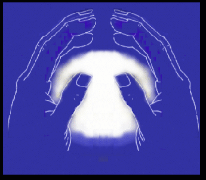
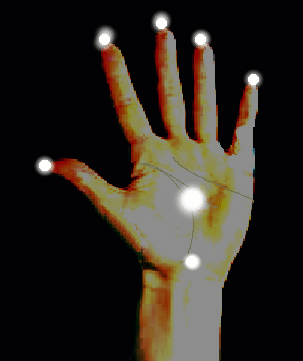

| 
| What this exercise does, when done consistently is to establish an energy circuit within the hand chakras. This energy can be used for healing, opening other chakras, applying energy or as with Dim Mak, the "death touch." It also helps with telekinesis (moving objects with one's mind and pyrokinesis (setting objects on fire using the powers of the mind and aura). In order to advance with these gifts, a powerful aura is needed to act on the auras of objects. This exercise should be done at least once a day to get your energy flowing freely through your hand chakras. |
- Sit comfortably and relax. Try to go into a trance as the deeper the trance and level of concentration, the better the results, especially when beginning this exercise. After an energy current within the hand chakras is open and flowing, this can be done anywhere at will.
- Put your hands facing each other, fingertips almost touching and relaxed. (Your fingers can be slightly bent as in the illustration).
- With the pad of your thumb, press into the palm of each of your hands, right in the hollow part.
- Now, focus intensly upon your hands, especially your palms. Feel the area you pressed in with your thumb.
- Keep focusing all of your concentration and begin to feel a warm glow and energy between your palms.
- Begin to move your hands an inch or two apart slowly and back again to where your fingertips are almost touching. Try to feel the energy between the palms of your hands. The more you practice and the stronger your energy becomes, keep moving your hands in and out, further and further apart until you can feel your energy as far apart as two or more feet.
- Now, visualize a ball of white hot fire like the sun as in the picture above. Later on, you can use colors. Feel the heat and energy from this ball of fire between your hands. This may feel as a tingling or throbbing. For some people, it may even feel cold. The important thing is to get this energy flowing and to *feel* it.
- Now let your arms hang down and relax. Focus on energy flowing down your arms into your hands. This may feel tingly and your lower arms and hands may feel pumped. This is a sign the enrgy is flowing. Now repeat steps 5-7 above.
- Do the above exercise 4 times.
This exercise should be done every day for as long as it takes to really open your hand chakras and establish a permanent flow of energy. With the proper practice, you should be able to feel powerful energy between your hands when your hands are more than a foot apart.After you have accomplished a strong energy field in your hands, practice extending this energy to your fingertips to open your fingertip chakras.  
BACK TO OPENING THE SOUL
BACK TO SATANIC POWER MEDITATION MAIN PAGE
© Copyright 2005, Joy of Satan Ministries;
Library of Congress Number: 12-16457